Preprint · Self-Improving Coding Agents · Comparative Evolution
Mendel Gödel Machine
Beyond single-failure edits: MGM reuses archived trajectories across tasks and lineages — Mendelian inheritance for agent scaffolds.
∗UESTC · †LMU Munich · ‡MCML · §Equal contribution
Figure 1. MGM organizes self-modification via controlled inheritance. The archive stores agent genotypes (source) and phenotypes (outcomes); each expansion samples among clonal mutation, reaction-norm mutation, and cross-lineage hybridization.
01 · TL;DR
Three operators
Clonal · Reaction-norm · Hybridization — edit scaffolds using single failures, multi-task phenotypes, or peer lineages that solved the same task.
50.8 → 93.3
Polyglot with Qwen3.6-35B-A3B. Surpasses GPT-5 (88%) with ~117× fewer parameters. DeepSeek-V4-Pro + MGM reaches 96.9%.
Proven faster
Under an additive fitness model, comparative operators raise effective fix probability — confirmed in Monte Carlo surrogate simulations and SWE-bench / Polyglot.
Self-improving coding agents that iteratively rewrite their own source code have demonstrated impressive performance on coding tasks. However, existing solutions generally derive self-modification from a single failure trajectory at a time, overlooking rich comparative signals available in the agent’s expanding archive of past attempts. According to Mendelian principles of controlled inheritance, we introduce Mendel Gödel Machine (MGM). In addition to the general single-trajectory clonal mutation, MGM includes two new types of self-modification that better utilize accumulated evidence: the reaction-norm mutation edits an agent based on its trajectories on multiple tasks simultaneously, and the cross-lineage hybridization edits an agent using the trajectory of a reference agent from another lineage on the same task.
Under an additive fitness landscape model, we prove theoretically and demonstrate via controlled surrogate simulation that the new strategies facilitate a faster and better convergence over single-trajectory baselines. Experiments on SWE-bench and Polyglot confirm MGM’s consistent improvement in performance, efficiency, and generalizability. Code: github.com/RealLcz/MGM.
02 · Mendelian Operators
Default sampling weights A : B : C = 0.1 : 0.45 : 0.45. Comparative operators reuse trajectories already collected during routine evaluation — no extra task runs required.
A ΦCM
Improve from a single failed task on the selected node — the HGM-style baseline that keeps search moving when the archive is still sparse.
Default weight 0.10
B ΦRM
Compare multiple phenotypes of the same genotype across tasks. Recurring failures compress the candidate defect set — fewer accidents, clearer diagnoses.
Default weight 0.45 · needs ≥2 evals
C ΦCH
Transfer capability from a peer lineage that solved a shared task. Contrastive traces reveal which behaviors are causal — and which to inherit.
Default weight 0.45
Loop
Select an operation and the archive resources it needs — node, tasks, and optional reference lineage.
Run the agent on untested tasks; record trajectories and binary outcomes as phenotype.
Rewrite the scaffold with CM, RM, or CH evidence — then insert the child into the lineage tree.
03 · Benchmarks
Same evaluation & expansion budget as HGM. Gains come from better diagnostic evidence, not more compute.
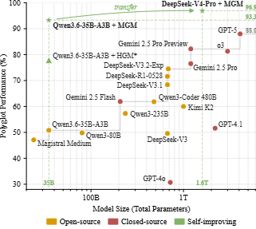
Figure 2. Polyglot performance vs model size. Qwen3.6-35B-A3B + MGM reaches 93.3%; DeepSeek-V4-Pro + MGM reaches 96.9%.
| Setting | Initial | HGM | MGM |
|---|---|---|---|
| SWE-bench Verified-60 | 68.3 | 73.3 +5.0 | 78.3 +10.0 |
| Polyglot-60 | 50.8 | 77.9 +27.1 | 93.2 +42.4 |
| Average | 59.6 | 75.6 +16.0 | 85.8 +26.2 |
| Wall-clock (avg) | — | 68.61 h | 68.12 h |
Table 1 · Qwen3.6-35B-A3B · 200 φ-evaluations · 24 Φ-expansions · 8×H100
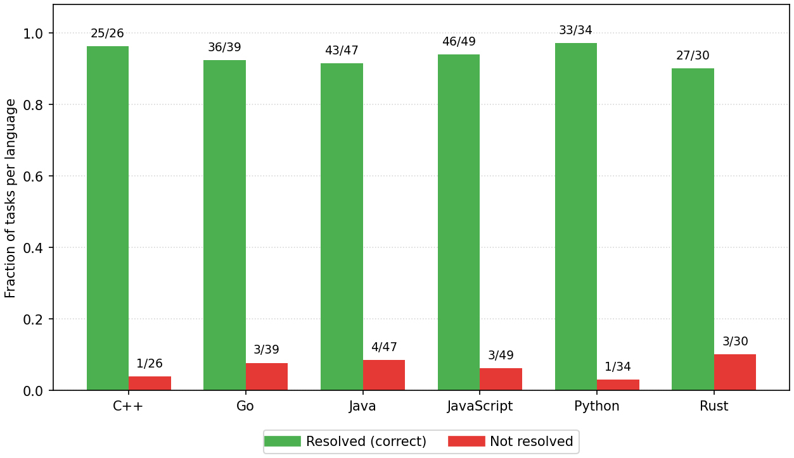
By language. 210 / 225 tasks solved across C++, Go, Java, JS, Python, Rust.
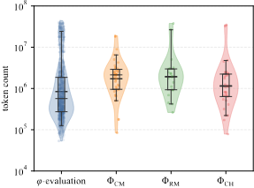
Token costs. CM, RM, and CH stay in the same order of magnitude — gains are not from spending more tokens.
04 · Transfer
MGM edits the agent workflow, not LLM weights. Evolved scaffolds remain useful when the task distribution or backbone changes.
Cross-benchmark · zero-shot
29.2% → 40.9%
Polyglot-evolved MGM scaffolds transfer to SWE-bench Pro & Multilingual. HGM average drops; MGM gains +11.7 pp.
Cross-model · scaffold freeze
47.5% → 70.8%
Scaffolds evolved on Qwen3.6 transfer to DeepSeek-V4-Flash / Pro. MGM average lift +23.3 pp vs HGM +17.5.
| Ablation · Polyglot-60 | Accuracy | vs Initial |
|---|---|---|
| Full MGM | 93.2 | ↑ 83.5% |
| w/o ΦRM | 79.7 | ↑ 56.9% |
| w/o ΦCH | 74.6 | ↑ 46.9% |
| Initial | 50.8 | — |
Table 4 · Both comparative operators matter; removing hybridization hurts most.
05 · Evolution Trees
Circular cladograms after 200 φ-evaluations and 24 Φ-expansions on Polyglot. Edge color = operator; node color = utility; grey arcs = hybridization references.
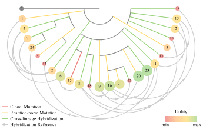
(a) MGM — CM · RM · CH with hybridization references.
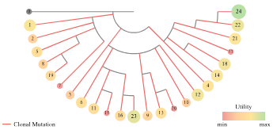
(b) HGM — clonal mutation only.
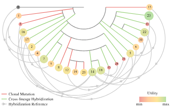
(c) w/o ΦRM — CM + CH remain.
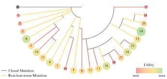
(d) w/o ΦCH — within-lineage evolution only.
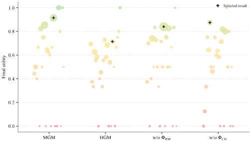
Final utilities. Marker area ∝ evaluations; + marks the selected result.
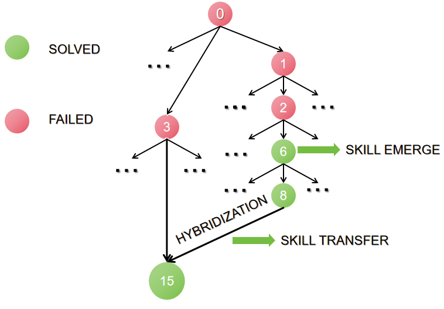
Skill transfer. A solved lineage donates capability to a failing peer via ΦCH.
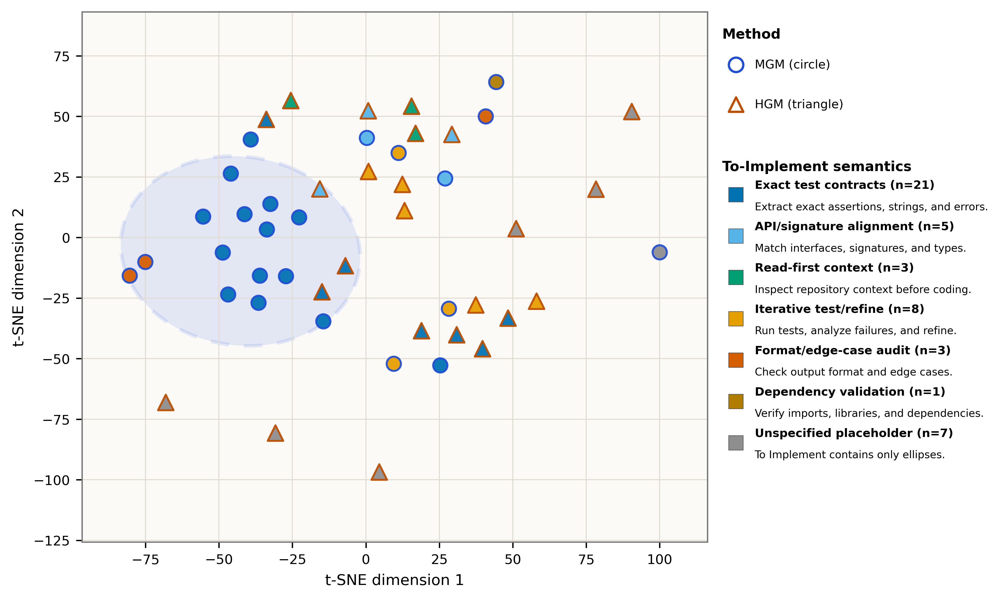
Semantic geometry. t-SNE of evolved “To Implement” skills — MGM clusters differently from HGM.
06 · Theory & Simulation
In an additive fitness landscape, ΦRM and ΦCH produce smaller candidate defect sets than ΦCM — raising effective fix probability when the editor targets a true mismatched locus.
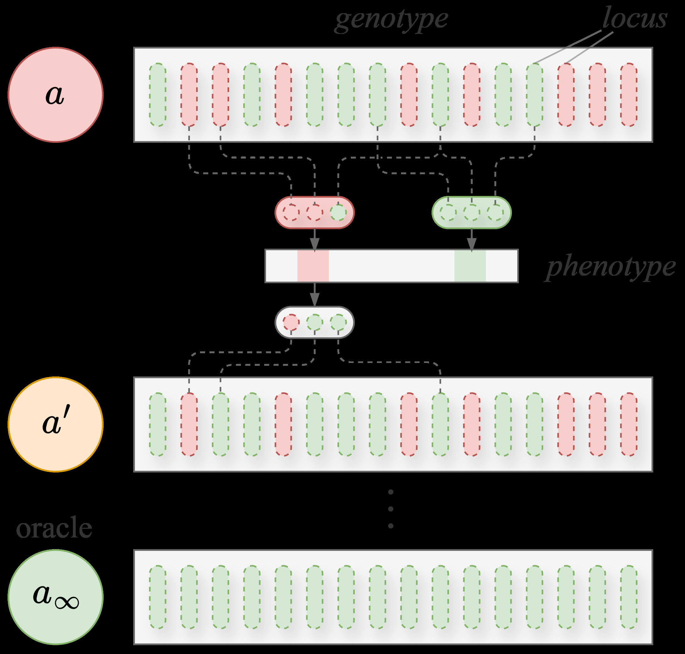
Figure 3. Genotype loci · task subsets · Hamming distance to oracle.
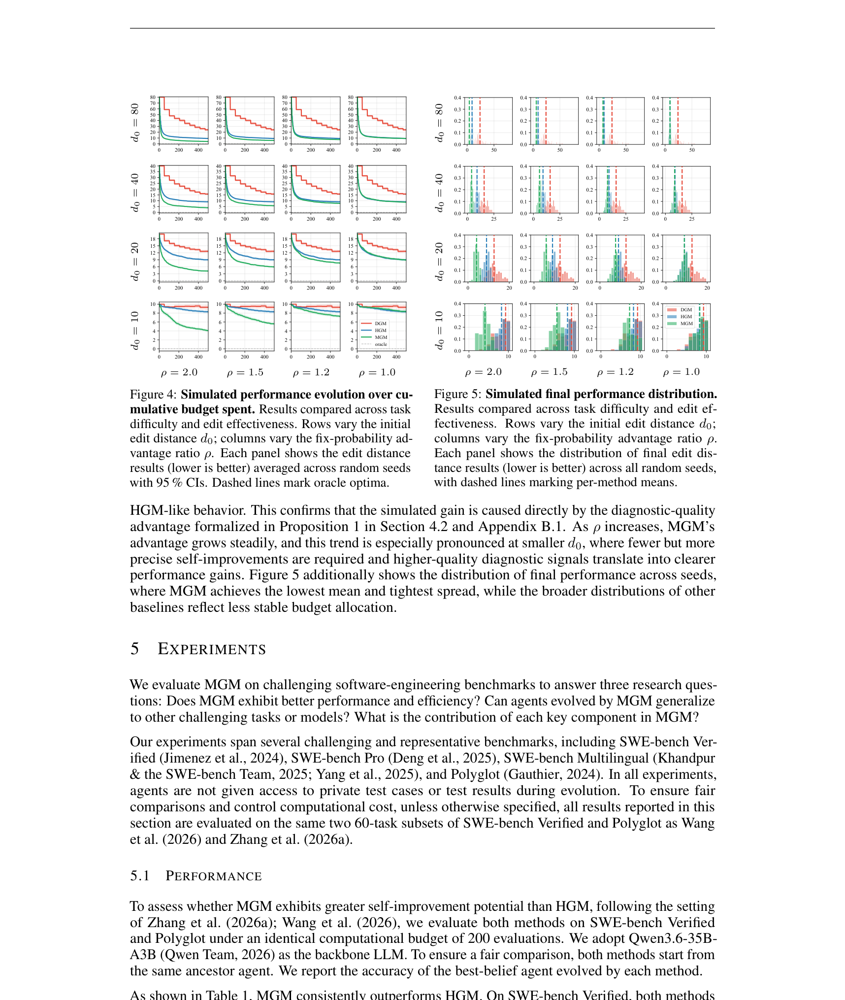
Figures 4–5. Surrogate search: as diagnostic advantage ρ grows, MGM converges faster with tighter final spread.
07 · Citation
Code is open at github.com/RealLcz/MGM. Community runs on new models and benchmarks are welcome as co-contributions.
@misc{liu2026mgm,
title={Mendel G\"odel Machine: Recursive Self-Improving Coding Agents via Comparative Evolution},
author={Changzhi Liu and Yilun Liu and Sikuan Yan and Volker Tresp and Yunpu Ma},
year={2026},
url={https://github.com/RealLcz/MGM}
}